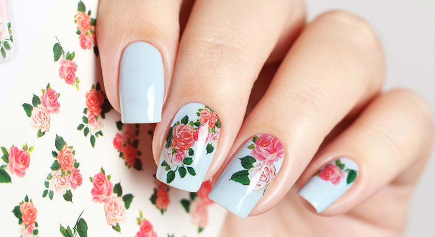
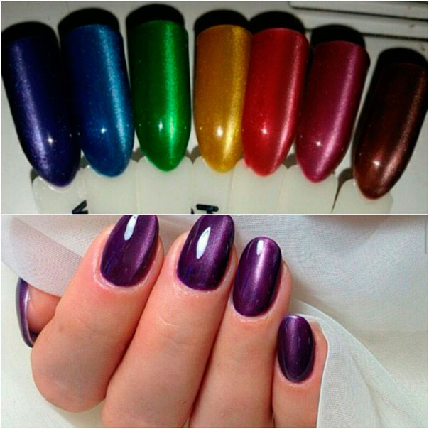
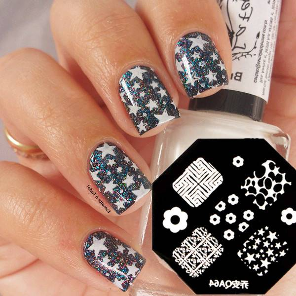
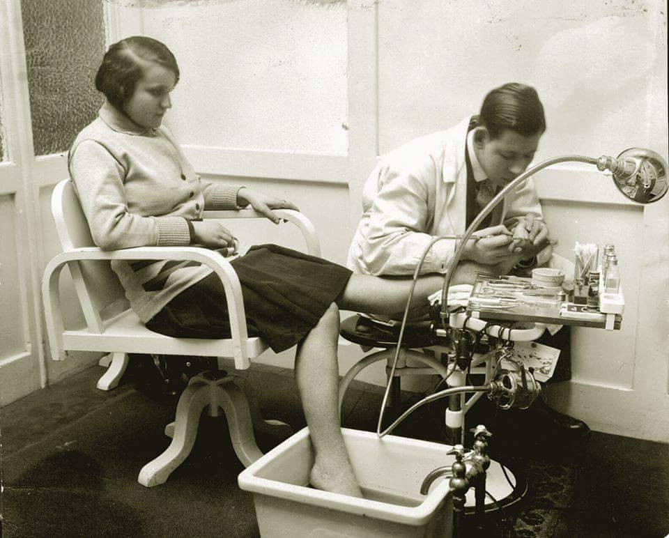
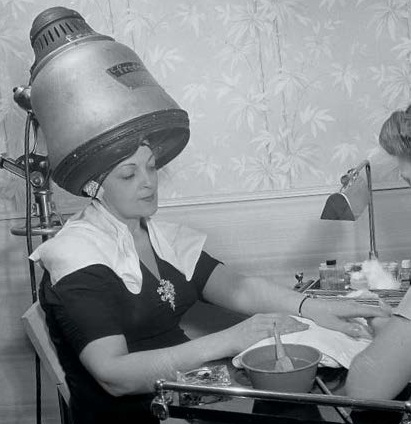

Слайдер-дизайн
После выполненного маникюра и покрытия всегда хочется чего-то еще. Добавить яркости и изящности, придать законченный внешний вид вам поможет слайдер-дизайн. Материал можно приобрести с совершенно разными узорами, начиная от геометрических форм и заканчивая цветочным принтом.
 Стемпинг
Простой дизайн ногтей можно создать с помощью стемпинга. Для этого вам понадобится или специальный набор для стемпинга, где есть все необходимые инструменты и материалы или специальный лак для стемпинга Konad на акриловой основе.
Простой маникюр в домашних условиях. 5 способов сделать красивый маникюр дома
Ухаживать за ручками и делать красивый маникюр в домашних условиях уже давно по силам каждому из нас. Но иногда, когда праздники стремительно наступают, а работы перед выходными только прибавляется, необходимо сделать качественное и стойкое покрытие максимально быстро и без лишних хлопот.
Несколько советов о том, как легко и красиво создать маникюр, превратят вас из любителя нейл-арта в искусную мастерицу. Мы рассмотрим идеи легкого маникюра и дизайна, который вы без труда сможете создать сами.Что может быть лучше, чем невероятно простые в использовании помощники для создания интересного маникюра, которого нет ни у кого. Самоклеящиеся трафареты – это настоящая находка для любителей ровной линии улыбки у французского маникюра, а так же интересных изгибов и волнистых линий.
С помощью трафаретов можно создавать лунный маникюр без особых усилий или придумывать интересные вариации по разделению ногтевой пластины волнистыми линиями и зиг-загами. Просто приклейте трафарет на ноготь и начинайте творить красоту.
ВОПРОС
) Сколько времени сохраняется на ногтях декоративный лак, если его правильно нанести? На этот вопрос нельзя дать однозначный ответ, так как все индивидуально. На продолжительность жизни лакового покрытия влияет состояние ногтей: на крепких и здоровых ногтевых пластинах покрытие держится гораздо дольше, чем на проблемных, а если ногти слоятся, то наносить на них лак практически бесполезно. В среднем лак сохраняется на ногтях в течение 6-7 дней, а для искусственных ногтей этот показатель увеличивается до нескольких недель. В любом случае можно продлить время жизни маникюра, если проводить несложные мероприятия. Выполняя работы по дому, надо надевать перчатки, чтобы на ногти не действовали химические средства. После контактов с водой используйте кремы для рук, хорошенько обрабатывая кутикулу при этом. Благотворное влияние на ногти и кожу оказывают питательные масла с добавлением натуральных масел (зародышей пшеницы, миндаля и других). 2) Что вы посоветуете женщинам с нездоровыми ногтями? Не существует универсальных рекомендаций, и каждый совет должен быть направлен на решение определенной проблемы. Ведь нередко плохой вид ногтевых пластин обусловлен заболеваниями некоторых внутренних органов. Следовательно, лечение следует начинать с посещения терапевта. Другое дело, если повреждение ногтей связано с использованием вредных препаратов, к примеру, содержащих ацетон жидкостей для удаления лака. В этом случае полезны витамины, специальные маски и лечебные лаки. Необходимо очень внимательно выбирать средства для снятия лака: они не должны содержать ацетона, а подходящими являются этилацетат или метилацетат.ИСТОРИЯ

Слово «маникюр» произошло от латинского manus, что в переводе означает «рука», и сuге — «уход». В современном понимании маникюр — это не только красивые ногти, но и лечебно-восстановительные процедуры, уход за кожей рук, технологии создания искусственных ногтей.
Процедура маникюра состояла:
-отодвигание кутикулы палочкой сделанной из слоновой кости
-придание формы своодному краю ногтевой пластины при помощи гранатовой пилки(из драгоценного камня)
-придание ногтевой пластине глянцевого блеска при помощи полировочных бафов в виде лодочки,сделанных из ценных пород деревьев или слоновой кости.
Маникюр же современного вида возник впервые во Франции. В 1830 году, когда у короля Луи Филиппа воспалился заусенец на пальце, одному доктору было приказано удалить заусенец с королевского пальца. Тогда находчивый доктор, справившись с этой маленькой операцией, разработал набор для ухода за руками. Тогда-то и была введена в этот набор апельсиновая палочка, позаимствованная в зубоврачебных инструментах, без которой не обходится ни один маникюрный кабинет до сих пор.
ЧИТАТЬ ДАЛЕЕ....
